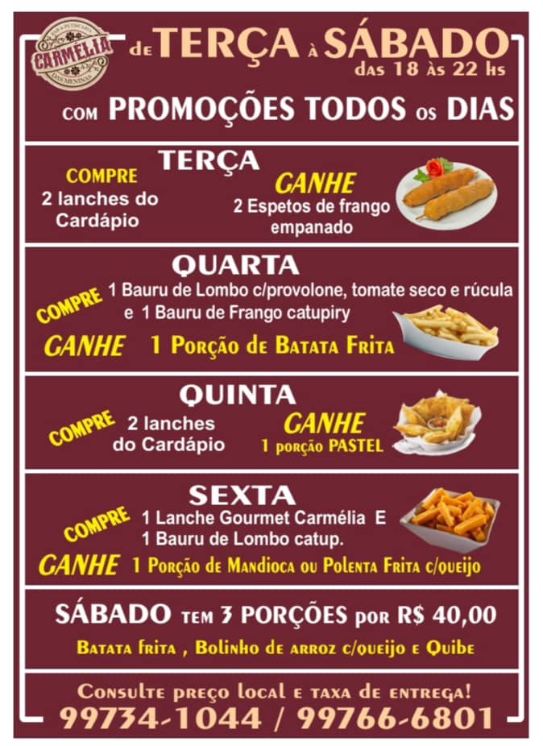

Design Digital Interativo
Autores
Guilherme Alves Teixeira da Silva | Matrícula: 568154
Felipe Moreira Pontes da Rocha | Matrícula: 564652
4 Princípios Básicos do Design
1. Alinhamento: O alinhamento cria uma conexão visual entre os elementos da página, ajudando a organizar o layout e a guiar o olhar do usuário.
2. Repetição: A repetição de elementos visuais como cores, formas e fontes cria consistência e reforça a identidade visual do projeto.
3. Contraste: O contraste é utilizado para destacar elementos importantes, utilizando diferenças de cor, tamanho e forma para chamar a atenção.
4. Proximidade: A proximidade agrupa elementos relacionados entre si, organizando a informação de maneira clara e acessível.
Peças Gráficas Escolhidas
- Cartaz Promocional de Evento Cultural: 48° Cartaz Festival do Folclore - Olímpia-SP
- Poster promocional do filme Prometheus
- Poster promocional do filme Alice Through the looking glass
- Menu do jogo Super Smash Bros 4
- Cardapio do restaurante Carmélia
- Tela de seleção de personagem de The King of Fighters 2002 UM
- Capa do jogo de Mega Drive: Turma da Mônica na Terra dos Monstros
- Tela inicial da página web da Friv.com
1° Peça Gráfica
Cartaz Promocional de Evento Cultural: 48° Cartaz Festival do Folclore - Olímpia-SP
1. Contraste!
Ponto positivo: O contraste entre as cores utilizadas no título e no fundo é eficiente, com o texto em verde e azul destacando-se sobre o fundo laranja. Isso torna o título legível e atrativo.
Ponto negativo: No entanto, o contraste no texto das informações principais poderia ser melhorado. O uso de texto amarelo em um fundo que mistura diversas cores pode dificultar a leitura, especialmente em partes onde o fundo é claro.
2. Alinhamento!
Ponto positivo: O alinhamento do texto é, em geral, bem organizado. O título e as informações principais estão centralizados, o que cria uma sensação de equilíbrio.
Ponto negativo: Alguns elementos, como os logos na parte inferior, parecem um pouco desalinhados, especialmente em relação ao texto acima. Isso pode dar uma impressão de desordem.
3. Repetição!
Ponto positivo: A repetição de cores e tipografia é eficaz, ajudando a criar uma identidade visual coesa para o evento.
Ponto negativo: Poderia haver mais consistência na aplicação de estilos de texto. Por exemplo, há uma mistura de estilos de fonte (negrito, regular) e cores que, embora adicionem variedade, também podem criar confusão.
4. Proximidade!
Ponto positivo: Positivo: A proximidade dos elementos relacionados funciona bem, como o agrupamento do título e das datas, o que facilita a compreensão das informações mais importantes.
Ponto negativo: A área inferior do cartaz, onde os logos e outras informações estão agrupados, parece um pouco congestionada. Isso pode dificultar a visualização rápida das informações.
2° Peça Gráfica
Poster Promocional do Filme Prometheus

1. Contraste!
Ponto positivo: A figura humana iluminada contrasta fortemente com cabeça na escuridão do fundo, criando uma tensão visual e destaca a inferioridade do ser humano na cena.
Ponto negativo: No entanto, o texto promocional no meio do poster está em uma fonte minúscula e sua cor se mistura com a cor do plano de fundo (a fumaça), se tornando difícil de ler.
2. Alinhamento!
Ponto positivo: O poster usa um alinhamento central forte, que atrai o olhar diretamente para o centro da imagem.
Ponto negativo: Sem comentários.
3. Repetição!
Ponto positivo: A cor azulada e as sombras escuras são usadas consistentemente em todo o pôster, criando uma atmosfera de mistério, o que acaba sendo coerente com o tema de suspense do filme.
Ponto negativo: Sem comentários.
4. Proximidade!
Ponto positivo: Positivo: Sem comentários.
Ponto negativo: A proximidade do texto com a figura humana pode limitar o uso do espaço negativo no pôster, tornando-o um pouco apertado na parte inferior.
Ajustes sugeridos: O texto deve ser escrito em uma fonte maior e preferencialmente em uma cor diferente, ou alternativamente com bordas coloridas delimitando seus espaços.
3° Peça Gráfica
Poster promocional do filme Alice Through the looking glass

1. Contraste!
Ponto positivo: O contraste entre o fundo escuro do castelo e as cores claras da roupa da Rainha Branca faz com que a personagem se destaque, atraindo assim a atenção do observador.
Ponto negativo: O contraste entre o texto "Anne Hathaway as the White Queen" e o fundo poderia ser maior. O texto em branco se mistura um pouco com as áreas mais claras do fundo, o que pode dificultar a leitura.
2. Alinhamento!
Ponto positivo: O texto "Alice Through the Looking Glass" está bem alinhado à esquerda, complementando a silhueta da Rainha Branca e guiando o leitor para o texto quando ele observa a personagem.
Ponto negativo: Há uma falta de alinhamento vertical entre os elementos textuais principais. Por exemplo, o título está alinhado a esquerda enquanto o nome da atriz está à esquerda, fazendo com (ao nosso ver) que haja uma ligeira desconexão visual entre os blocos de informação.
3. Repetição!
Ponto positivo: A repetição das cores pastel (especialmente o rosa e lilás) na roupa da Rainha Branca, nas flores e no fundo cria uma harmonia visual agradável e coerente.
Ponto negativo: A repetição de elementos florais na borda direita da imagem pode competir com a atenção dedicada à personagem e ao título, tornando a composição um pouco carregada.
4. Proximidade!
Ponto positivo: Positivo: A proximidade entre o texto do título ("Alice Through the Looking Glass") e a data de lançamento cria uma conexão clara entre essas informações, facilitando a leitura.
Ponto negativo: A proximidade entre a personagem principal e os personagens secundários na parte inferior direita poderia ser mais explorada para propor a ideia de conexão entre os personagens.
Ajustes sugeridos: O texto deve ser escrito em uma fonte maior e preferencialmente em uma cor diferente, ou alternativamente com bordas coloridas delimitando seus espaços.
Ajustes sugeridos: Aumentar o contraste entre o texto "Anne Hathaway as the White Queen" e o fundo para garantir maior legibilidade, Centralizar os textos para que sigam uma linha visual comum, reduzir o número de elementos florais para que o pôster fique menos sobrecarreagado e reforçar a proximidade entre os personagens. É importante que o designer arranje seus elementos para criar uma harmonia visual clara.
4° Peça Gráfica
Menu do jogo Super Smash Bros

1. Contraste!
Ponto positivo: O contraste de cores entre o vermelho e o branco do logo "SMASH" é forte e chama a atenção. A cor laranja do botão "Online" também se destaca, guiando o olhar do jogador.
Ponto negativo: Sem comentários.
2. Alinhamento!
Ponto positivo: Sem comentários
Ponto negativo: O menu do jogo Super Smash Bros 4 utiliza elementos visuais sem ordenação dispostos sem preocupação com a visualização do usuário quando for jogar, dispostos de modo qualquer.
3. Repetição!
Ponto positivo: A repetição do formato arredondado dos botões e do logo central cria uma sensação de unidade e coesão visual.
Ponto negativo: A repetição das cores poderia ser explorada de forma mais estratégica para criar grupos de elementos relacionados, facilitando assim a comunicação.
4. Proximidade!
Ponto positivo: Sem comentários.
Ponto negativo: Os elementos do menu estão ordenados de forma que não existe uma distinção clara entre a função e utilidade dos botões, sem uma hierarquia visual e dispostos de forma aparentemente aleatória, sem sentido de relação. Um menu desorganizado pode confunir os jogadores e fazê-ls ficar frustrados com o produto.
Ajustes sugeridos: O designer deve dispor os elementos de modo ordenado de forma a guiar os olhos do usuário e criar uma sensação de ordem. Além disso, é importante dispor os botões de forma a deixar claro sua possível utilidade e agrupar funções relacionadas perto uma das outras para melhor distribuição dos elementos para o jogador.
5° Peça Gráfica
Cardapio do restaurante Carmélia

1. Contraste!
Ponto positivo: O contraste entre o fundo vermelho escuro com o texto com cores claras (branco, amarelo e bege) ajuda na leitura.
Ponto negativo: O contraste entre as promoções poderia ser maior.
2. Alinhamento!
Ponto positivo: Sem comentários.
Ponto negativo: O alinhamento dos elementos visuais poderia ser padronizado, criando uma composição mais harmoniosa.
3. Repetição!
Ponto positivo: A repetição do layout para cada dia da semana cria uma estrutura visua consistente, facilitando a compreensão do cardápio.
Ponto negativo: Entretanto, a repetição excessiva do formato tornou o cardápio um pouco monótono.
4. Proximidade!
Ponto positivo: Positivo: Os elementos "dia da semana, promoção , alimentos" estão próximos, facilitando a associação entre eles.
Ponto negativo: Sem comentários.
Ajustes sugeridos: O Designer deve destacar as informações mais importantes, aumentandoo contraste entre as promoções, padronizar o alinhamento do texto e elementos visuais para garantir uma composição harmoniosa e melhorar a disposição dos textos e imagem para evitar o sentimento de monotonia.
6° Peça Gráfica
Tela de Seleção de personagem de The King of Fighters 2002 UM
1. Contraste!
Ponto positivo: O contraste entre os personagens coloridos e o fundo escuro destaca bem os personagens e facilita a escolha.
Ponto negativo: O contraste entre os nomes dos personagens e o fundo poderia ser maior, especialmente para os nomes menores.
2. Alinhamento!
Ponto positivo: Os personagens estão centralizados em hexágonos, criando uma sensação de ordem e organização.
Ponto negativo: Sem comentários.
3. Repetição!
Ponto positivo: A repetição do formato hexagonal para cada personagem cria uma estrutura visual consistente e agradável esteticamente.
Ponto negativo: Sem comentários.
4. Proximidade!
Ponto positivo: Sem comentários.
Ponto negativo: A disposição dos personagens em hexágonos próximos uns dos outros atrapalha na intuição da formação de times pré-definidos do modo história como nos jogos anteriores.
Ajustes sugeridos: O Designer poderia aumentar o contraste entre os nomes dos personagens e o fundo. Ele também poderia introduzir um espaçamento a cada três hexágonos para reforçar a ideia dos trios pré-definidos.
7° Peça Gráfica
Capa do jogo de Mega Drive: Turma da Mônica na Terra dos Monstros
1. Contraste!
Ponto positivo: O contraste entre as cores vibrantes dos personagens (Mônica e o monstro) e o fundo mais escuro cria um bom destaque visual. O Título "Turma da Mônica na Terra dos Monstros" também está bem contrastado do fundo bege.
Ponto negativo: O contraste entre algumas das letras da logo "MEGA DRIVE", "textos em português" e "SEGA" e o fundo vermelho escuro poderia ser melhor.
2. Alinhamento!
Ponto positivo: O alinhamento dos elementos é bastante preciso, com os personagens alinhados a esquerda e os textos do título alinhados com o bloco de imagem.
Ponto negativo: O alinhamento da logo "MEGA DRIVE" poderia ser melhor. Ela parece um pouco deslocada em relação aos outros elementos.
3. Repetição!
Ponto positivo: A repetição da fonte e do estilo das letras em todo o design cria uma unidade visual única e divertida que combina muito bem com a Turma da Mônica.
Ponto negativo: Sem comentários.
4. Proximidade!
Ponto positivo: Os elementos relacionados estão próximos, como o título do jogo e a imagem da Mônica.
Ponto negativo: Sem comentários.
Ajustes sugeridos: O alinhamento do logo "MEGA DRIVE" poderia ter uma cor diferente para contrastar com o fundo vermelho escuro, poderia também se alinhar com o bloco de imagem da Mônica e o Monstro.
8° Peça Gráfica
Tela inicial da página web da Friv.com
1. Contraste!
Ponto positivo: O contraste entre o fundo roxo escuro e os ícones coloridos torna os jogos facilmente identificáveis. O logo do Friv em amarelo sobre um fundo laranja também cria um bom contraste.
Ponto negativo: Sem comentários.
2. Alinhamento!
Ponto positivo: Os ícones dos jogos estão bem alinhados em uma grade, o que facilita a navegação.
Ponto negativo: Sem comentários.
3. Repetição!
Ponto positivo: Sem comentários.
Ponto negativo: A repetição excessiva do formato quadrado pode tornar a interface um pouco monótona.
4. Proximidade!
Ponto positivo: Sem comentários.
Ponto negativo: A proximidade entre os ícones pode dificultar a leitura dos títulos dos jogos, especialmente em telas menores.
Ajustes sugeridos: O Designer pode procurar uma forma alternativa de dispor os ícones, por exemplo afastando a proximidade entre eles ou introduzindo um texto para acompanhar os ícones. Ele também poderia introduzir formatos diferentes aos ícones para introduzir mais diversidade à interface.